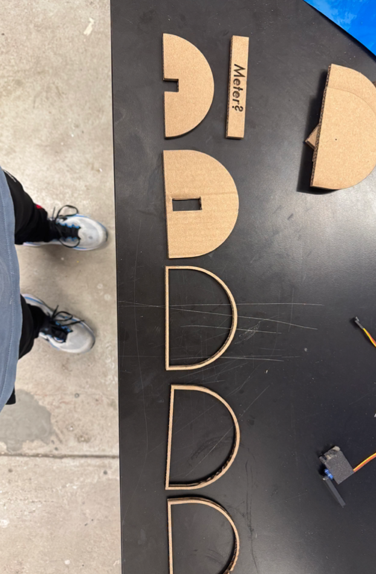
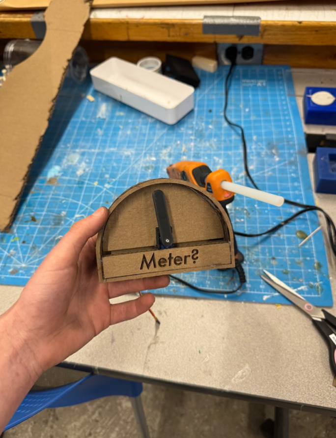

I'm super proud of my IOT week because it felt like everything came together to make this super high-quality project fly by. First, I modeled my "meter" in Fusion. This came out perfectly on my first try! That never happens! See carousel for images and Fusion screenshots.
Then, I press-fit the Servo motor into the device and glued it all together using hot glue. Then, incidentally, I smashed the thing to pieces while traveling back home across the country… anyways but now it's back in one piece!
Now, I put the text "Meter?" on the meter because I was unsure what I was going to measure with it. Initially, my idea was temperature since the API was super easy and free and my code could map all temperatures from (0-100) to 0 - 180 for me to display on the meter through websockets which I choose because it is the most simplest way for me to test things rapidly with my computer and hardware. However, eventually I settled on Kalshi odds since a) Kalshi's API is super duper easy and b) everything is already normalized 0% to 100% so once I set it up once for one market, (angle = int(90 - prob * 1.8)), it should work for whichever market I select later on. For the demo video, though, it is displaying the odds that the Lions win the super bowl. This will be a good one to keep it on, I suspect, as the meter should continue to tick upwards through the year.
Furthermore, given that a requirement of this assignment was to use an input sensor as well and the only input sensor at home with me is an LDR, I also used the "Meter?" to display LDR values in realtime (video & code also in carousel). This didn't require any IOT though

Laser-cut meter parts and “Meter?” label

Assembled “Meter?” dial with servo press-fit
Demo Video
LDR realtime display on meter
#include <WiFi.h>
#include <WebSocketsServer.h>
#include <ESP32Servo.h>
const char* SSID = "Cooper Secure";
const char* PASSWORD = "***";
const int SERVO_PIN = D2;
WebSocketsServer webSocket(81);
Servo myServo;
void onEvent(uint8_t num, WStype_t type, uint8_t* payload, size_t length) {
if (type == WStype_TEXT) {
int angle = atoi((char*)payload); // -90 to 90
myServo.write(angle + 90); // shift to 0-180 for servo
Serial.printf("Got %d -> servo %d\n", angle, angle + 90);
}
}
void setup() {
Serial.begin(115200);
myServo.attach(SERVO_PIN);
myServo.write(90); // start centered
WiFi.begin(SSID, PASSWORD);
while (WiFi.status() != WL_CONNECTED) { delay(500); Serial.print("."); }
Serial.println();
Serial.println(WiFi.localIP()); // note the IP it prints
webSocket.begin();
webSocket.onEvent(onEvent);
}
void loop() {
webSocket.loop();
}
Websocket ESP32 Code
import time
import requests
from websocket import create_connection
ESP32_IP = "10.0.1.61"
WEBSOCKET_PATH = "/ws"
WS_PORT = 81
KALSHI_URL = "https://external-api.kalshi.com/trade-api/v2/markets?event_ticker=KXSB-27&limit=100"
def lions_probability():
data = requests.get(KALSHI_URL).json()
for m in data["markets"]:
if "Detroit" in m.get("yes_sub_title", "") or "Lions" in m.get("yes_sub_title", ""):
return float(m["yes_bid_dollars"]) * 100 # 0.05 -> 5.0
return 0.0
ws = create_connection(f"ws://{ESP32_IP}:{WS_PORT}{WEBSOCKET_PATH}")
while True:
try:
prob = lions_probability()
angle = int(90 - prob * 1.8) # 0% -> -90, 100% -> +90
ws.send(str(angle))
print(f"Lions: {prob:.1f}% -> {angle}°")
except Exception as e:
print(f"Error: {e} — reconnecting")
try: ws = create_connection(f"ws://{ESP32_IP}:{WS_PORT}{WEBSOCKET_PATH}")
except: pass
time.sleep(60)